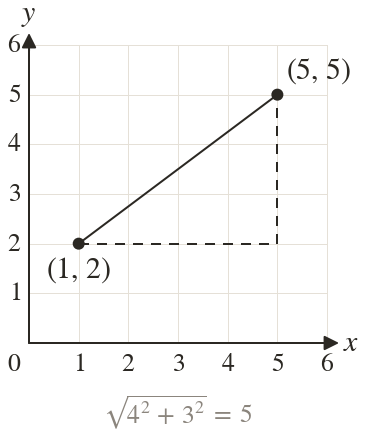
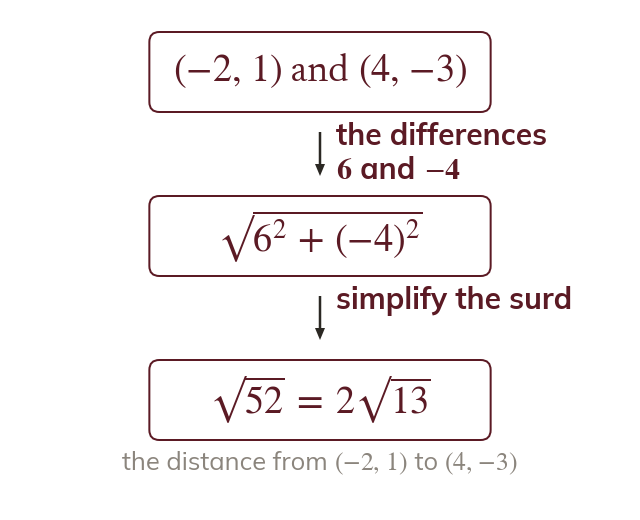
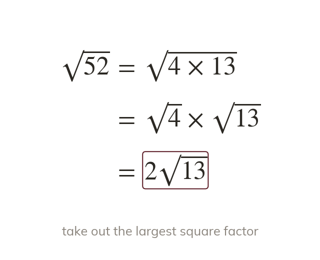
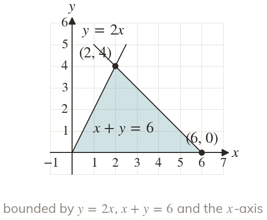
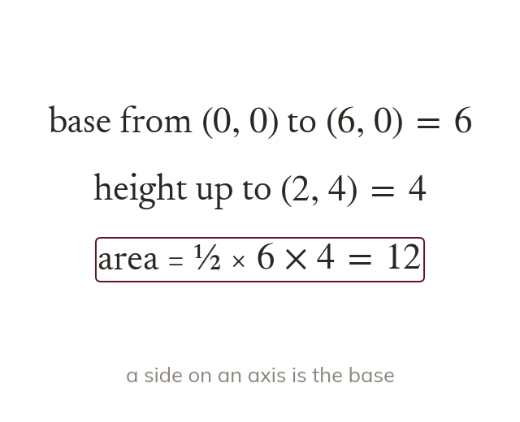
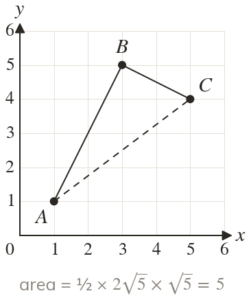

Pythagoras on a grid
The segment from to is the hypotenuse of a right-angled triangle with sides and
Its length is
Pythagoras on a coordinate grid gives the exact length of any segment, and the vertices of a triangle come from where its sides meet. Lengths and areas are often the last part of a coordinate geometry question, and next lesson uses straight lines to model real data.
Work down the page at your own pace. Write every answer in your book first, then click to check it.
Read each card, then follow the worked examples one step at a time.

The segment from to is the hypotenuse of a right-angled triangle with sides and
Its length is

The distance between and is Squaring makes each difference positive, so the order of the points does not matter.

Leave a distance as a simplified surd unless a decimal is asked for. Take out the largest square factor, so which is about
Pick an answer. If it's wrong, the feedback tells you which mistake it was.
Write the blanks in your book first, then tap each one to check.
Read each card, then follow the worked examples one step at a time.

The area of a shape bounded by lines needs its vertices. A vertex on the x-axis comes from putting ; a vertex where two lines cross comes from solving them together.

With a side on the x-axis, that side is the base, and the height is the y-coordinate of the third vertex. Here the base is and the height is

If two sides are perpendicular, use them as the base and the height. AB and BC have gradients and so they meet at a right angle at .
Pick an answer. If it's wrong, the feedback tells you which mistake it was.
Write the blanks in your book first, then tap each one to check.
Finished? Next lesson: 12.P5.5 Modelling with Straight Lines.
For each skill, tap the one that is true for you today. Your Revise pages start with anything you mark Not yet.
Your ratings are saved on this device only.
Log in, then search for a code to practise that skill.